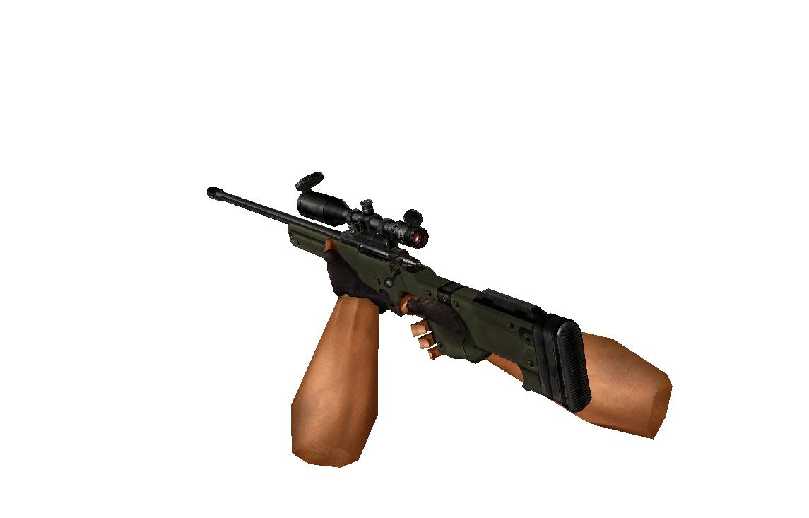

3D graphics. Load and animation model.
Introduction
There are many file formats. In this example we look at the structure .mdl file. This format is used in such legendary games as Half-Life and Counter-Strike.
Many people wonder how it all works. The example shows how to load a file and animation.
The main objective of this example to show how to mix managed and unmanaged code. Those interested in 3D graphics just do not find for themselves a lot of interesting things.
Building the Sample
For assembly, open the solution in VS, and then build. If you are using the express version, the libraries are not included. In case if you can not find them, then lay out further.
Description
Quick start.
The results are output.

In this case, the window inherits the System :: Windows :: Forms :: Form. HDC we obtain in the usual manner.
if (!(hDC=GetDC((HWND)hwnd.ToPointer()))) MessageBox::Show( "Can't Create A GL Device Context.","ERROR");
if (!(hDC=GetDC((HWND)hwnd.ToPointer()))) MessageBox::Show( "Can't Create A GL Device Context.","ERROR");
No additional libraries are required. It should also be said that use OpenGL. But you will not be difficult to rewrite the code of DirectX.
Interaction of managed and unmanaged code in this example is rather complicated. Because of the managed and unmanaged classes.
public ref class Form1 : public System::Windows::Forms::Form
{
public:IntPtr hwnd;
//public:IntPtr hDC;
public: HDC hDC;
public: GLuint PixelFormat;
public: HGLRC hRC; // Permanent Rendering Context
public: static GLfloat rtri; // Angle For The Triangle ( NEW )
public: static GLfloat rquad; // Angle For The Quad ( NEW )
public: static CountS *pCountSS;
public: static double gdAngleX,gdAngleY,gdTransX,gdTransY,gdTransZ;
private: double giX, giY, m_dx,m_dy;
public: static int keys;
public:
Form1(void)
{
InitializeComponent();
…
class CountS{
public:
struct Vertex
{
int m_boneID; // for skeletal animation
dfx::vector<> m_location;
float m_location1[3];
};
struct Triangle
{
float m_vertexNormals[3][3];// Normals to each of vertex of a triangle
float m_s[3], m_t[3];// Textural coordinates for a triangle
int m_vertexIndices[3];//3 tops make a triangle
};
public ref class Form1 : public System::Windows::Forms::Form { public:IntPtr hwnd; //public:IntPtr hDC;public: HDC hDC; public: GLuint PixelFormat; public: HGLRC hRC; // Permanent Rendering Contextpublic: static GLfloat rtri; // Angle For The Triangle ( NEW )public: static GLfloat rquad; // Angle For The Quad ( NEW )public: static CountS *pCountSS; public: staticdouble gdAngleX,gdAngleY,gdTransX,gdTransY,gdTransZ; private: double giX, giY, m_dx,m_dy; public: staticint keys; public: Form1(void) { InitializeComponent(); … class CountS{ public: struct Vertex { int m_boneID; // for skeletal animation dfx::vector<> m_location; float m_location1[3]; }; struct Triangle { float m_vertexNormals[3][3];// Normals to each of vertex of a triangle float m_s[3], m_t[3];// Textural coordinates for a triangleint m_vertexIndices[3];//3 tops make a triangle };
You can see it in more detail.
Consider the model itself. It is a set of standard set of vertices, texture, and above all skeletal animation.
Sample 1. Reload(number key 2-4).

Sample 1. Shot(number key 5-7).

To move and zoom model use a mouse.
It is important to note that we use for turns quaternion. This allows for smoother animation model.
quaternion( const dfx::vector< T > &axis, T angle ) {// quaternion
T scale = ( T )sin( angle / T(2) );
w = ( T )cos( angle / T(2) );
x = axis.x * scale;
y = axis.y * scale;
z = axis.z * scale;
}
friend quaternion operator*( const quaternion &a, const quaternion &b ) {
const T Qx = a.w * b.x + a.x * b.w + a.y * b.z - a.z * b.y;
const T Qy = a.w * b.y - a.x * b.z + a.y * b.w + a.z * b.x;
const T Qz = a.w * b.z + a.x * b.y - a.y * b.x + a.z * b.w;
const T Qw = a.w * b.w - a.x * b.x - a.y * b.y - a.z * b.z;
return quaternion( Qw, Qx, Qy, Qz );
}
quaternion( const dfx::vector< T > &axis, T angle ) {// quaternion T scale = ( T )sin( angle / T(2) ); w = ( T )cos( angle / T(2) ); x = axis.x * scale; y = axis.y * scale; z = axis.z * scale; } friend quaternion operator*( const quaternion &a, const quaternion &b ) { const T Qx = a.w * b.x + a.x * b.w + a.y * b.z - a.z * b.y; const T Qy = a.w * b.y - a.x * b.z + a.y * b.w + a.z * b.x; const T Qz = a.w * b.z + a.x * b.y - a.y * b.x + a.z * b.w; const T Qw = a.w * b.w - a.x * b.x - a.y * b.y - a.z * b.z; return quaternion( Qw, Qx, Qy, Qz ); }
You managed to use a model from Valve! But you can do better!
Good luck.
More Information
3D model can be used only for training. Commercial use is prohibited.